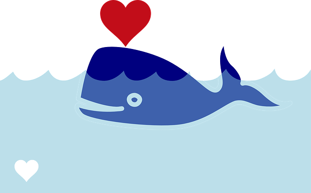

Ett svalkande dopp i det blå är oemotståndligt en varm dag. Havet ger oss många unika upplevelser och förgyller sommaren. Men vårt vackra Östersjön är också ett av världens mest förorenade hav.... Östersjöns känsliga miljö påverkas av transporter, jordbruk och fiske. Nu behöver vi din hjälp – som Östersjöfadder stödjer du månadsvis vårt arbete för att rädda Östersjön från algblomningar, utfiskning och bottendöd. Samtidigt bidrar du till ett starkare WWF som kan genomföra fler marina naturvårdsprojekt.
Om du efter all denna information känner att du vill göra något för vår kära Östersjön så har jag lämnat en länk till WWF. Klicka på länken för att bli fadder och skänka en summa pengar i månaden så blir alla Östersjöns organismer glada.
